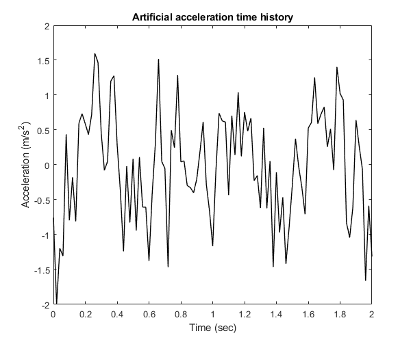
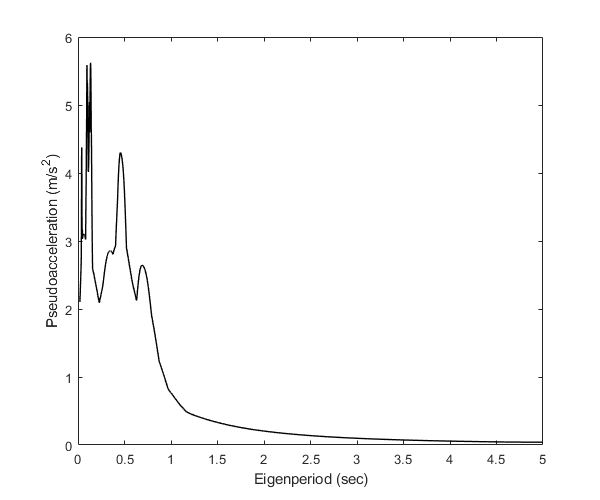
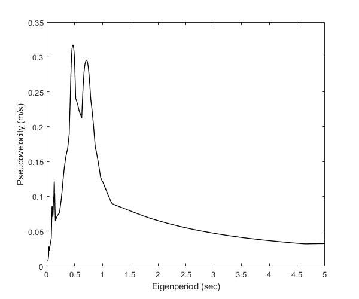
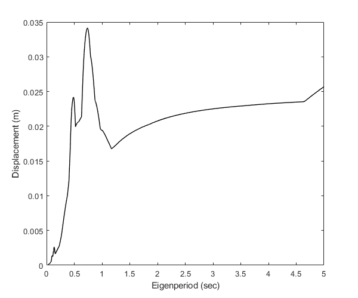
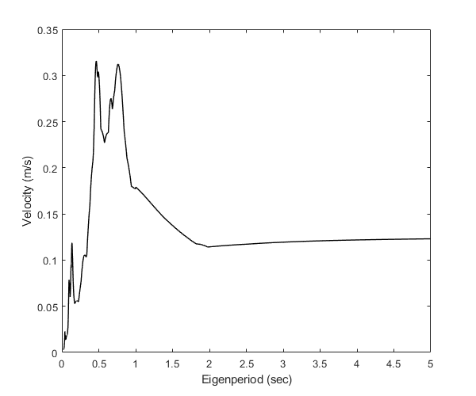
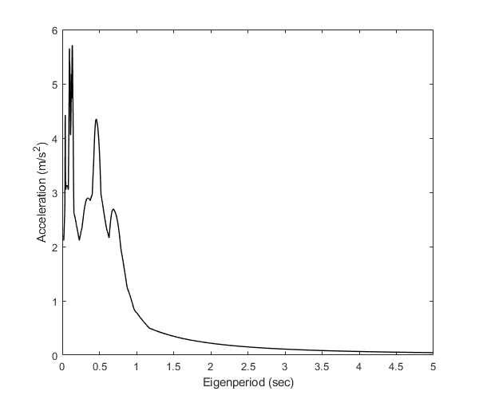
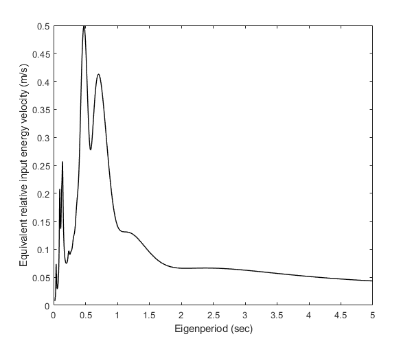

LEReSp
Calculate linear elastic response spectra in OpenSeismoMatlab
Contents
Generate earthquake motion
For reproducibility
rng(0)
Generate earthquake acceleration time history
dt=0.02; N=10; a=rand(N,1)-0.5; b=100*pi*rand(N,1); c=pi*(rand(N,1)-0.5); t=(0:dt:(100*dt))'; xgtt=zeros(size(t)); for i=1:N xgtt=xgtt+a(i)*sin(b(i)*t+c(i)); end
Plot the generated time history
figure() plot(t,xgtt,'k','LineWidth',1) ylabel('Acceleration (m/s2)') xlabel('Time (sec)') title('Artificial acceleration time history')
Setup parameters for LEReSp function
Eigenperiods
T=logspace(log10(0.02),log10(5),1000)';
Critical damping ratio
ksi=0.05;
Maximum ratio of the integration time step to the eigenperiod
dtTol=0.02;
Algorithm to be used for the time integration
AlgID='U0-V0-Opt';
Minimum absolute value of the eigenvalues of the amplification matrix
rinf=1;
Calculate spectra and pseudospectra
Apply LEReSp
[PSa,PSv,Sd,Sv,Sa,SievABS,SievREL]=LEReSp(dt,xgtt,T,ksi,dtTol,AlgID,rinf);
Plot the spectra and pseudospectra
Pseudoacceleration spectrum
figure() plot(T,PSa,'k','LineWidth',1) ylabel('Pseudoacceleration (m/s2)') xlabel('Eigenperiod (sec)')
Pseudovelocity spectrum
figure() plot(T,PSv,'k','LineWidth',1) ylabel('Pseudovelocity (m/s)') xlabel('Eigenperiod (sec)')
Displacement spectrum
figure() plot(T,Sd,'k','LineWidth',1) ylabel('Displacement (m)') xlabel('Eigenperiod (sec)')
Velocity spectrum
figure() plot(T,Sv,'k','LineWidth',1) ylabel('Velocity (m/s)') xlabel('Eigenperiod (sec)')
Acceleration spectrum
figure() plot(T,Sa,'k','LineWidth',1) ylabel('Acceleration (m/s2)') xlabel('Eigenperiod (sec)')
Equivalent absolute input energy velocity
figure() plot(T,SievABS,'k','LineWidth',1) ylabel('Equivalent absolute input energy velocity (m/s)') xlabel('Eigenperiod (sec)')
Equivalent relative input energy velocity
figure() plot(T,SievREL,'k','LineWidth',1) ylabel('Equivalent relative input energy velocity (m/s)') xlabel('Eigenperiod (sec)')
Warning: Imaginary parts of complex X and/or Y arguments ignored

Copyright
Copyright (c) 2018-2022 by George Papazafeiropoulos
- Major, Infrastructure Engineer, Hellenic Air Force
- Civil Engineer, M.Sc., Ph.D.
- Email: gpapazafeiropoulos@yahoo.gr